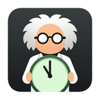
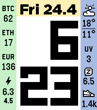
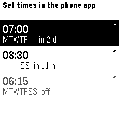
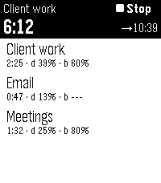
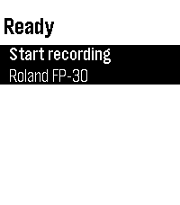
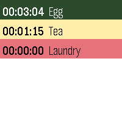

Six apps for the Pebble smartwatch — all open source, all published on the Pebble appstore.
Pebble is the smartwatch that outlived its own company: the hardware is being made again, the firmware is open, and the watch still does the one thing a watch should do — run for days and answer instantly.
These six apps started as things I wanted on my own wrist. They are written in C against the Pebble SDK, with the phone-side configuration in TypeScript, and every one of them is open source on GitHub.




Start and stop recording with one tap, and see the take length and the connected keyboard at a glance — useful when the phone is across the room and your hands are on the keys. Companion to the MIDI Recorder app.

Open a link above on the phone that is paired with your Pebble and install from the appstore listing, or build the app yourself from its GitHub repository with the Pebble SDK. Screenshots on this page are from a Pebble Time 2.